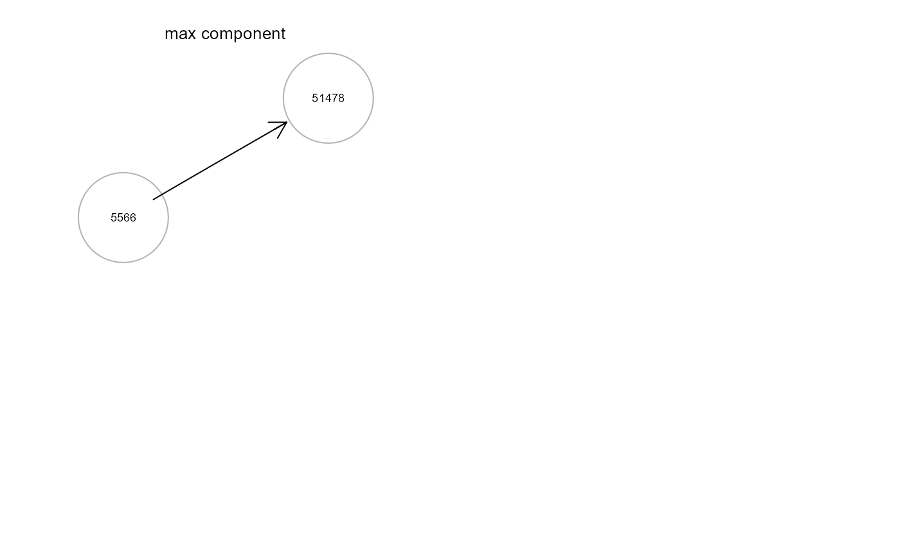

Creates a network with perturbed edges obtained from
the output of SEMrun with two-group and CGGM solver.
To increase the efficiency of computations for large graphs,
users can select to break the network structure into clusters and select
the topological clustering method (see clusterGraph).
The function SEMrun is applied iteratively on
each cluster to obtain the graph with the full list of perturbed edges.
SEMdci(graph, data, group, C = "none", method = "BH", alpha = 0.05, ...)Input network as an igraph object.
A matrix or data.frame. Rows correspond to subjects, and columns to graph nodes (variables).
A binary vector. This vector must be as long as the number of subjects. Each vector element must be 1 for cases and 0 for control subjects.
Topological clustering methods (default C = "none"). If
type = "tahc", network modules are generated using the tree
agglomerative hierarchical clustering method (Yu et al., 2015).
Other non-tree clustering methods from igraph package include: "wtc"
(walktrap community structure with short random walks),
"ebc" (edge betweeness clustering), "fgc" (fast greedy method), "lbc"
(label propagation method), "lec" (leading eigenvector method), "loc"
(multi-level optimization), "opc" (optimal community structure), "sgc"
(spinglass statistical mechanics).
Multiple testing correction method. One of the values
available in p.adjust. By default, method is set
to "BH" (i.e., Benjamini-Hochberg correction).
Gene set test significance level (default = 0.05).
Currently ignored.
An igraph object.
# \dontrun{
# Nonparanormal(npn) transformation
library(huge)
als.npn <- huge.npn(alsData$exprs)
#> Conducting the nonparanormal (npn) transformation via shrunkun ECDF....done.
g <- kegg.pathways[["MAPK signaling pathway"]]
G <- properties(g)[[1]]; summary(G)
#> Frequency distribution of graph components
#>
#> n.nodes n.graphs
#> 1 3 1
#> 2 291 1
#>
#> Percent of vertices in the giant component: 99 %
#>
#> is.simple is.dag is.directed is.weighted
#> TRUE FALSE TRUE TRUE
#>
#> which.mutual.FALSE
#> 1967
#> IGRAPH 9c9bb66 DNW- 291 1967 --
#> + attr: name (v/c), weight (e/n)
# Create ALS network with perturbed edges using edge betweeness clustering
gU<- SEMdci(G, als.npn, alsData$group, C="ebc", method="BH", alpha=0.2)
#> modularity = 0.5407795
#>
#> Community sizes
#> 4 3 6 1 5 2
#> 8 12 17 74 75 105
#>
#> fit cluster = 1
#> fit cluster = 2
#> fit cluster = 3
#> fit cluster = 5
#> fit cluster = 6
#> Done.
gcU<- properties(gU)
#> Frequency distribution of graph components
#>
#> n.nodes n.graphs
#> 1 2 4
#> 2 3 2
#> 3 4 1
#> 4 30 1
#> 5 44 1
#> 6 64 1
#>
#> Percent of vertices in the giant component: 41 %
#>
#> is.simple is.dag is.directed is.weighted
#> TRUE TRUE TRUE FALSE
#>
#> which.mutual.FALSE
#> 81
old.par <- par(no.readonly = TRUE)
par(mfrow=c(2,2), mar=rep(1,4))
gplot(gcU[[1]], l="fdp") # max component
gplot(gcU[[2]], l="fdp") # 2nd cpmponent
gplot(gcU[[3]], l="fdp") # 3rd component
gplot(gcU[[4]], l="fdp") # 4th component

par(old.par)
# }